Research question
Did the exported examples
reach the handoff?
The former export admitted a query only when it had all twenty future action cells. Near a phase boundary or parking transition, that rule removed the last second of genuine teacher behavior. Its closest retained tangential distance was 5.132 mm in TRAIN and 5.134 mm in selection VAL. The original handoff requires a tangential condition within 2 mm, together with independent gap, rotation, speed and native state checks.
The corrected export admits a nonempty, contiguous prefix of real future teacher cells and masks its unavailable suffix. On the same eighteen physically qualified captures, TRAIN grows from 7,558 to 8,090 origins and selection VAL from 2,193 to 2,345. The closest encoded tangential distances become 1.910 mm and 1.988 mm. A policy is not queried inside an instantaneous handoff; coverage is assessed at real query opportunities.

Label contract
Keep the real futures.
Mask the missing suffix.
Every origin retains two real causal observations. Every supervised future is an actual complete twelve tick teacher setter interval. STOP, analytic alignment, partial native cells and injected perturbations provide no future action labels. Actual perturbations can appear in past observations: they are the recovery states the teacher must handle.
The mask controls the official ACT loss, TRAIN action normalization and reported validation metrics. A real CPU integration check used prefix lengths 1, 10 and 20: changing masked action values to one million changed the official loss by exactly zero. This used a fresh untrained policy and no parameter updates. A separate complete comparison found all six numerical arrays bit identical for every legacy full H20 window.
The new mask schema and protocol are explicit. Original full H20 datasets and historical experiment receipts remain intact. Native physical qualification still precedes label extraction.
Evidence before expansion
Teach the recovery.
Measure the closed loop.
Actual expert recovery
Perturb the executed motion.
Query the teacher from that state.
The corrected qualification batch declares eight TRAIN episodes across two bodies, two recorded seated poses and R3/L3. A seeded 0.03 rad target perturbation begins in the final approach, at declared 35 mm or 60 mm query distances. These are perturbation settings, not guaranteed measured displacements. The expert replans from the measured state while retaining the live command position, velocity and acceleration.
An initial R3 recovery proposal encountered a native terminal numerical degeneracy. The original numerical bound stays fixed. Alternative tiny waypoint candidates receive numerical preflight followed by the complete original collision, posture and finite difference preview. An independent logging fix attributes the twenty four actual stationary STOP samples to their true setter. The earlier incomplete label ledger remains excluded from training.
Each admitted recovery still completes actual approach, contact, at least three seconds of qualified holding, release and home. Every attempted episode, rejection and missing receipt stays visible. The corrected eight case batch has closed: seven physically qualified recovery episodes contribute 152 real query origins. One numerical recovery rejection supplies no positive labels. The combined data contain eighteen nominal and seven recovery episodes, with 8,242 TRAIN and 2,345 selection VAL origins. The full planned data ledger retains twenty nominal slots, including two CPU unavailable plans, and all eight recovery attempts: 25 positive episodes / 28 planned slots. This small batch does not meet a population qualification gate.
| TRAIN body | Known pose | Site | Outcome | Real origins |
|---|---|---|---|---|
| p001120 | 1 | R3 | Qualified | 32 |
| p001120 | 1 | L3 | Qualified | 20 |
| p001120 | 2 | R3 | Qualified | 21 |
| p001120 | 2 | L3 | Qualified | 20 |
| p000833 | 1 | R3 | Numerical preview rejection | 0 |
| p000833 | 1 | L3 | Qualified | 19 |
| p000833 | 2 | R3 | Qualified | 20 |
| p000833 | 2 | L3 | Qualified | 20 |
The complete data ledger retains all twenty eight planned slots. Recovery physics and labels were independently rechecked before training.
Actual model protocol
The same ACT backbone.
Corrected supervision.
The model is the pinned official 2,658,823 parameter ACT with no VAE. It takes q7, goal relative position3, rotation6D and prescribed goal confidence1 as state17; two observations provide 34 features. It predicts twenty raw joint targets relative to the fixed query origin and executes up to ten cells before querying again. The native handoff can interrupt execution.
The first repaired run completed 20,000 optimizer steps and forty full masked selection VAL evaluations. The earliest minimum selected step 3,500: full chunk raw target MAE was 5.933 mrad TRAIN and 26.254 mrad selection VAL. On the same selection origins, holding the current state scored 146.301 mrad and constant velocity 132.718 mrad. Actual selected CUDA predictions reproduced on CPU within the original numerical tolerance. These are offline target errors, not successful contact.
Half each minibatch samples real TRAIN origins within 60 mm of the prescribed pose; half samples uniformly. No fabricated joint state noise is used. Training to step 20,000 reduced TRAIN error but gave 31.199 mrad selection VAL error; selection uses the full validation minimum rather than the last weights.

This ACT is state only. RGB, depth and Hall remain recorded in simulation, and Hall participates in analytic contact control. They are not ACT model inputs in this experiment. Learned L2 approach is followed by the original analytic L3 alignment, contact, holding, release and home.
Actual development result
Better offline fit.
Zero completed contact cycles.
The selected weights actually ran in Isaac from home on four explicit TRAIN or selection VAL cases. All four failed the original physical qualification. The native guards stopped the motion; no analytic expert substituted for learned L2. The fresh eight identity cohort was not exposed.
| Body / role | Site | Native ticks | Actual stopping reason |
|---|---|---|---|
| p001120 / TRAIN | R3 | 7,927 | Mesh clearance guard |
| p001120 / TRAIN | L3 | 7,107 | Joint posture envelope |
| p000923 / selection VAL | R3 | 6,214 | Mesh clearance guard |
| p000923 / selection VAL | L3 | 2,172 | Raw predicted chunk outside joint limits |
Both clearance failures also retain a secondary neutral audit finalization error in the terminal report. The table states the underlying native point failure from the intact log. Neither error is relabeled as a successful episode.
A concrete coverage mismatch remains. Across all TRAIN query origins within 60 mm of the prescribed pose, the largest encoded orientation error is 2.04°. The actual TRAIN R3 student reaches 3.60° in that region, and selection VAL R3 reaches 6.13°. Selection VAL L3 stops much earlier, about 425 mm from the prescribed pose, so final approach recovery alone may not fix it. These are encoded goal frame errors, not measurements of skin flatness or penetration. Actual query support measurements.
The next collection executes authenticated raw target prefixes from the actual failed TRAIN rollouts, cuts at declared 80 mm and 60 mm query distances, then asks the expert to replan from the new measured state. It starts physically from home, retains live command derivatives, and applies every original collision and posture check. Replayed student motion and internal history waits are perturbations, never positive teacher action labels. Only the subsequent expert futures in a fully qualified episode can enter training. This is new recovery data collection, not a new ACT evaluation or a demonstrated policy fix.
Second completed treatment
Actual student recovery data.
Still zero native passes.
All four new home-start recovery episodes completed the original contact, holding, release and home qualification. They replayed authenticated student targets to the first 80 mm or 60 mm query, then let the expert recover from the new measured state. They add 131 real query origins: the next native dataset contains 8,373 TRAIN / 2,345 selection VAL origins and 29 qualified episodes / 32 declared data slots. All seven arrays of the previous TRAIN and selection VAL data remain bit identical as an ordered prefix. This is a small diagnostic dataset, below the formal M2 population gate.
The second ACT completed 20,000 steps, selected step 16,500, and reproduced selected CUDA predictions on CPU within the unchanged tolerance. Its raw full chunk MAE was 5.404 mrad TRAIN / 26.640 mrad selection VAL. It then ran the same four actual development cases: 0/4 physically qualified. No planned auxiliary data were used in either completed treatment. Complete second run evidence and all forty evaluations.
| Body / role | Site | Native ticks | Actual stopping reason |
|---|---|---|---|
| p001120 / train | R3 | 6,953 | Joint posture envelope |
| p001120 / train | L3 | 4,173 | Joint posture envelope |
| p000923 / validation | R3 | 7,568 | Mesh clearance guard |
| p000923 / validation | L3 | 2,892 | Raw predicted chunk outside joint limits |
The remaining coverage gap is measurable. New native inputs reach 2.97° of encoded orientation error within 60 mm, but still only 1.59° within 35 mm. The original failed student reaches about 3.4° at 35 mm. On recorded teacher inputs in that region, both models already have submillimeter mean translation error when comparing the FK of their raw joint targets with teacher raw targets. That is an offline target-space measurement, not observed tracking. Raw-target pose diagnostics. The combination points to insufficient state and early path coverage as a working hypothesis; it does not prove data volume alone will fix the policy.
A separate CPU diagnostic queried the expert at six genuine TRAIN student states. All six proposed correction paths pass the original complete 240 Hz geometric, posture and derivative preview. Those actions were not executed and are not physically qualified demonstrations. Their files remain separate from the native dataset. Coverage and six-query CPU evidence. At that stage, the next declared experiment expanded to sixteen TRAIN body shapes and kept planned ideal tracking and genuine student oracle supervision as distinct auxiliary sources. Real TRAIN normalization, real selection VAL, fresh identity isolation and actual physical acceptance stay fixed.
Third completed treatment · ACT3
Lower selection error.
Still no completed cycle.
Research question. Could additional computed supervision make ACT complete the same four development contact cycles? ACT3 retained the official 2,658,823 parameter, state only ACT: H2/state17, H20/E10, with learned L2 approach and analytic L3 contact assistance. RGB, depth and Hall were not neural inputs. The frozen source23 and selected weights are bound in the source and model references.
Configuration. ACT3 retained 8,373 real TRAIN / 2,345 real selection VAL origins, adding computed auxiliary supervision: 60 accepted planned ideal tracking sources / 64 attempted slots, with 35,108 origins and 679,360 supervised cells, plus six unexecuted student oracle origins with one supervised cell each. These computed sources are not physically qualified demonstrations. Training completed 20,000 steps; forty full selection evaluations selected step 20,000. Real TRAIN raw target MAE was 6.960 mrad and full real selection VAL MAE 10.100 mrad. Selected CPU equivalence passed. These are prediction errors, not measured tracking or contact.
Actual result. The selected ACT weights ran all four home start DEV cases with no expert L2 fallback: 0/4 physically qualified. Both TRAIN sites and selection VAL L3 stopped at original posture bounds; selection VAL R3 stopped at the original 3 mm mesh clearance gate. Its reported minimum was 2.999370 mm; the exact clearance scalar is bound in the public bindings. The secondary audit finalization issue is recorded in the original Linux receipts; the public case ledger retains the generic qualification verdict. The fresh eight identity / 32 scenario cohort remains unexposed. All forty evaluations, four outcomes and recording provenance.
| Role | Site | Physical result | Underlying native stop |
|---|---|---|---|
| TRAIN | R3 | Rejected | Original joint posture envelope |
| TRAIN | L3 | Rejected | Original joint posture envelope |
| Selection VAL | R3 | Rejected | Original 3 mm mesh clearance |
| Selection VAL | L3 | Rejected | Original joint posture envelope |

Limitation and next rationale. Better error on this selection cohort did not produce a qualified contact cycle. The plotted stopping reserve is optimistic, and this diagnosis does not prove a single cause or a successful fix. It motivated a separate smooth bounded action head and full computed oracle chunks in place of sparse oracle cells. ACT4 also closed negative, under the same native gates.
Fourth completed treatment · ACT4
A bounded action.
Still no successful handoff.
Question and configuration. Would a smooth action head and full computed correction chunks prevent the earlier posture failures? Source24 kept 8,373 real TRAIN / 2,345 real selection VAL origins and 35,108 planned origins, with 12 computed oracle origins / 239 supervised cells. Head v1 used 0.001 rad softness and the original physical joint box with a 0.001 rad inset. These oracle paths were computed supervision, not newly measured demonstrations.
Completed fit, negative physics. All 20,000 updates completed. Forty full selection evaluations selected step 18,500; raw full chunk target MAE was 7.908 mrad TRAIN / 11.192 mrad selection VAL, and CPU equivalence passed. The actual selected ACT then qualified 0/4 home start DEV cycles, with no expert L2 fallback. Normal owner completion is not task success. Exact closed result and all forty evaluations.
| Role / site | Native ticks | Underlying failure | Final reported failure |
|---|---|---|---|
| TRAIN / R3 | 29,041 | L2 / 120 s deadline | 100 MB directory cap |
| TRAIN / L3 | 4,008 | STOP preview CPU deadline after coarse region | STOP preview CPU deadline |
| Selection VAL / R3 | 29,041 | L2 / 120 s deadline | 100 MB directory cap |
| Selection VAL / L3 | 29,041 | L2 / 120 s deadline | 100 MB directory cap |
A handoff record is not a successful handoff: every case has one record, zero actual L2 handoff successes and zero L3 starts. Analytic L3 is available only after a proper handoff; even the TRAIN L3 case stopped before it began. The later 100 MB directory cap shadows the underlying L2 deadline in the other three final reports. Both layers remain in the public result.
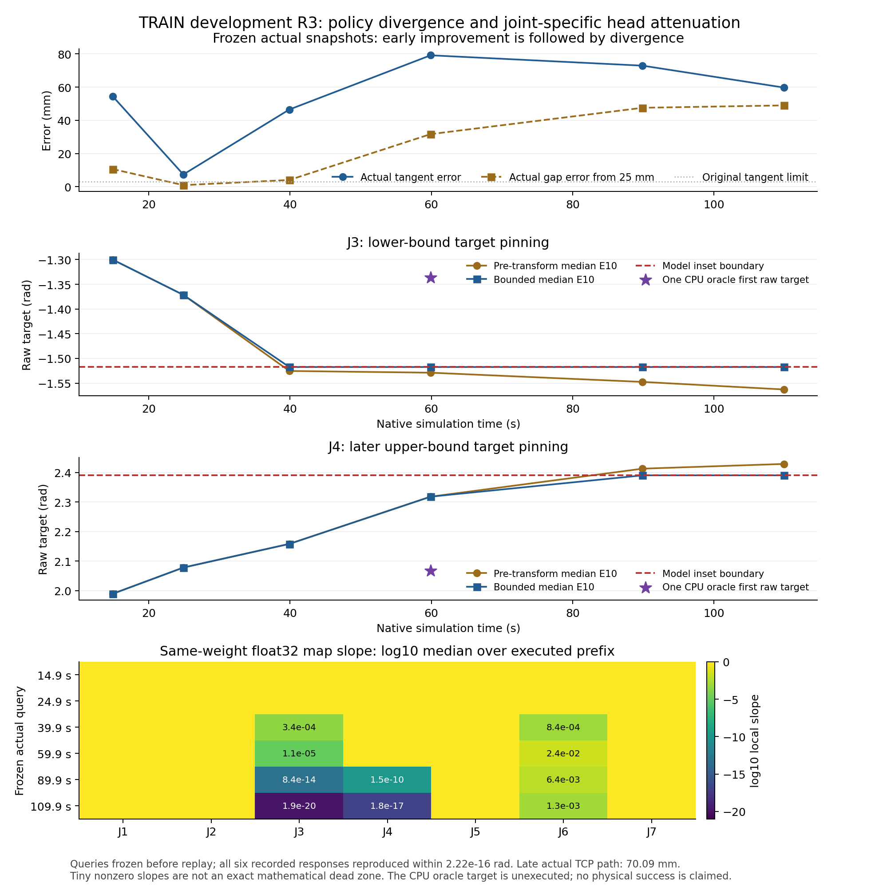

Historical V3 preparation snapshot · 03:07 UTC
Test the correction paths.
Keep computed data distinct.
The failed approaches motivate a combined treatment: repair STOP preparation, broaden conditional recovery support and soften the bounded head. Source25’s CPU counterfactual checks pass 12/12 original failed states through full geometry, finite differences, a numerical stationary tail and replay. The tail uses three identical commands plus 24 constant ticks. These checks do not verify measured settling, a live native preview, actual physics, restored native output or qualification within the historical cumulative retry budget. The later source26 production inherits the repair implementation; no separate source26 counterfactual rerun is reported. Nine new genuine TRAIN query slots yield 8 accepted / 1 rejected, with 159 computed cells; they are not new measured demonstrations.
A separate static GENERATED H2 production is complete: 64 frozen cases from sixteen TRAIN bodies, two known poses and R3/L3, with four anchors and joint L2 radii 0.015 / 0.04 / 0.08 / 0.12 rad, seed 20261107. It accepts 854 / 1,024 slots and retains all 170 rejections, including 64 original unavailable slots. The accepted data contain 17,080 cells, checked through 208,318 original checks in 626.074 s with three CPU workers. These are generated static histories, not genuine DART or executed recovery demonstrations.
The completed CPU export preserves the parent 35,120 auxiliary origins / 72 sources / 76 slots as an exact ordered prefix. It contains 35,982 computed auxiliary origins / 934 sources / 1,109 attempted slots, including 20 oracle origins from 21 slots and 398 cells. Real native TRAIN / selection VAL remain 8,373 / 2,345; these auxiliary counts are not actual demonstration counts. Head v2 increases softness to 0.010 rad while retaining the physical joint box and 0.001 rad inset. Proposed native / planned / conditional / oracle batch counts are 32 / 8 / 8 / 16, weighted 0.50 / 0.125 / 0.125 / 0.25. This is a combined engineering treatment, not a causal ablation.
Preparation snapshot, November 7 at 03:07 UTC: export passed in 557.367 s; official CPU integration is running at this snapshot. The following ACT5 entry records the later completed training. Still pending: completed integration verification, training, four actual DEV cycles, then the frozen fresh eight identity / 32 scenario test. The fresh identities remain unexposed. Bounded public preparation summary and original receipt references. This summary is not a copy of the original Linux receipts. The partial source26 inspection/CPU capsule is distributed separately; raw data and complete original runtime archives are not bundled.
Fifth treatment · ACT5 · trained result and closed legacy diagnostic
Trained is a milestone.
Contact remains the test.
Official CPU integration completed in 423.019 s, then ACT5 ran all 20,000 optimizer updates with the declared four sampling groups. Among 40 complete native validation evaluations, the earliest minimum selected step 19,000. Full H20 raw target MAE is 6.734 mrad TRAIN / 11.690 mrad selection VAL. The selected CPU/CUDA comparison passed all 8,373 / 2,345 origins under the original tolerances. These are prediction results, not contact or generalization results.
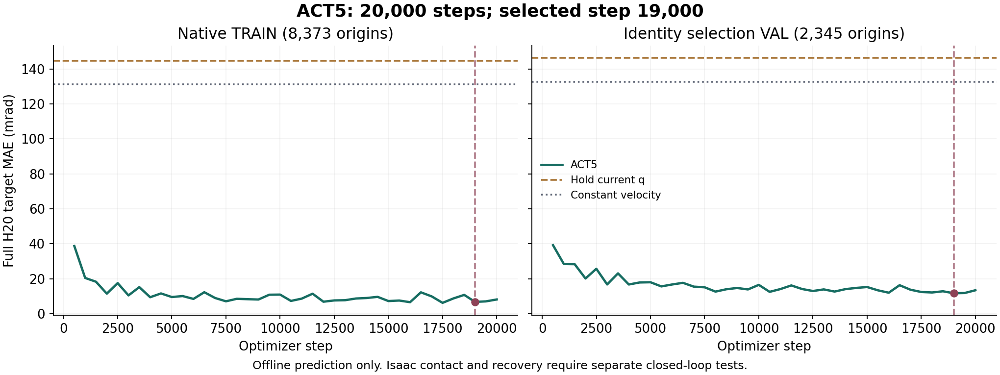

The first four ACT5 development launches aborted before SimulationApp: the scene authoring comparison mistakenly retained a validated runtime only STOP option. Those are four infrastructure aborts and zero physical episodes, not a model 0/4 contact result. A separately frozen native runtime27 fixes that projection while keeping the trained numerical source26 modules and weights unchanged. A new full official CPU witness passed in 329.053 s; its numerical receipt is byte identical to the original, in a new independently recorded execution path.
Closed actual diagnostic: 0/4 qualified. The original owner completed normally and released the GPU; all four physical audits closed negative. Three cases timed out before L2 handoff. The selection VAL R3 point recorded successful handoff, three seconds of force and plane qualified hold, unload and return, but its whole case failed the unchanged 100 MB recording cap. That completed motion is useful evidence, not a qualified success. The legacy diagnostic did not test the new STOP option. All four verdicts, scalar audits and media digests. The 04:43 UTC snapshot preserves the earlier running status.
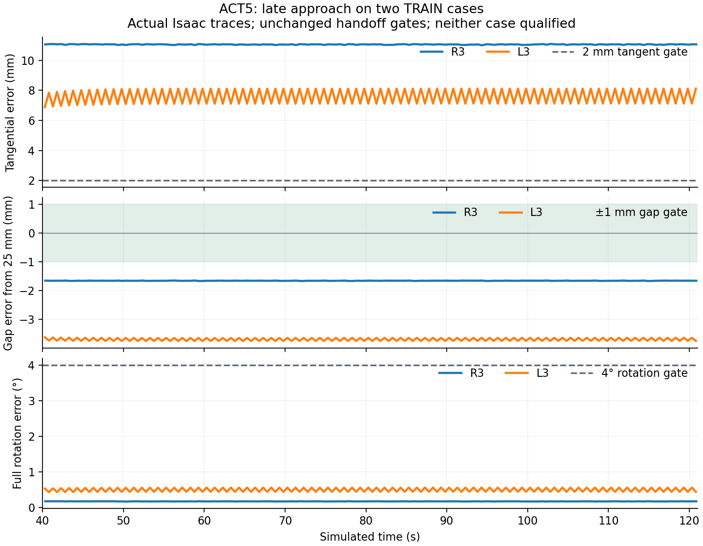

Sixth treatment · ACT6 · closed training snapshot at 07:25 UTC
Teach the states
the student actually visits.
After the ACT5 owner closed, we froze three query boundaries for each failed TRAIN target: at or before 60 s, 90 s and the last eligible query. All six genuine student state queries were accepted by the original authenticated oracle, adding 120 computed future action cells. These continuations were not executed or measured in physics; they are auxiliary labels, not six new successful demonstrations. No selection VAL or fresh identity labels were added.
Completed fit and full CPU equivalence. The V4 export passed in 700.113 s, preserving the complete parent and adding only those six origins. ACT6 initialized from ACT5’s selected step 19,000 with a fresh AdamW optimizer, then completed 20,000 new updates. All 40 complete native selection evaluations chose step 18,000: full H20 raw target MAE is 6.233 mrad TRAIN / 9.814 mrad selection VAL. The selected CPU/GPU comparison passed under the original tolerances. These remain offline target prediction results.
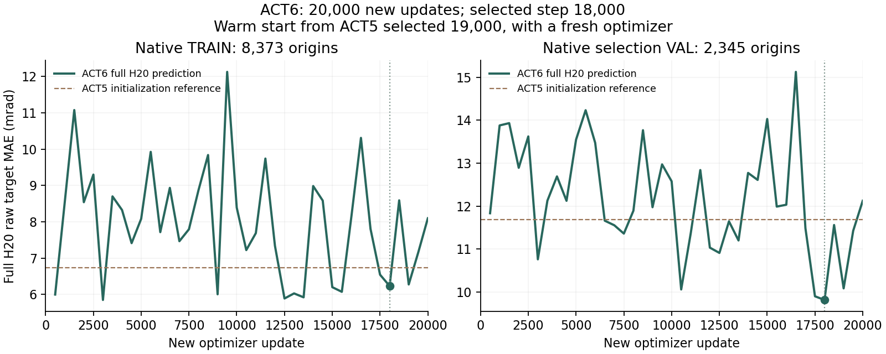
Measured and computed data stay separate. The measured native bank contains 25 qualified TRAIN episodes from four identities and four selection VAL episodes from one identity: 18 nominal and 11 recovery episodes in total. The auxiliary bank’s 35,988 origins / 940 sources span an authorized 16 TRAIN identities and are computed labels. Those counts do not mean 940 successful physical demonstrations or 16 bodies with measured native trajectories. RGB-D and Hall are recorded; ACT itself remains state only L2 with analytic L3.
Actual development result: 2/4 qualified. The first post-training controller aborted before Native startup when it tried to read a binary checkpoint as JSON. A separate corrected continuation reused the completed training and ran all four declared scenarios. Both original owners closed normally; all four physical audits finished, with no infrastructure error. TRAIN R3 and selection VAL L3 passed. TRAIN L3 and selection VAL R3 reached the original 120 second L2 deadline without a contact hold. The same selected weights remain unqualified, and no fresh identity has been exposed. All four cases and receipt digests. The earlier preparation snapshot remains available.
| Known body and target | Original physical verdict |
|---|---|
| TRAIN p001120 · R3 | Pass: contact, hold, unload and home |
| TRAIN p001120 · L3 | Fail: L2 120 second deadline, no hold |
| Selection VAL p000923 · R3 | Fail: L2 120 second deadline, no hold |
| Selection VAL p000923 · L3 | Pass: contact, hold, unload and home |
Diagnosing the remaining approach cycle. Six adjacent phase queries from the failed TRAIN L3 run retain the measured two observation history, interpolator state and actual command seam. Replaying the student’s first ten cells reproduces all 601 available Native commands bit for bit. The oracle’s 720 preview commands also reproduce its original proposal exactly and move closer to the prescribed precontact pose. This is a CPU command diagnosis, not a new physical success. A zero relative HOLD baseline is rejected by the original stationary roundoff check in four of six states; those abstentions remain visible.
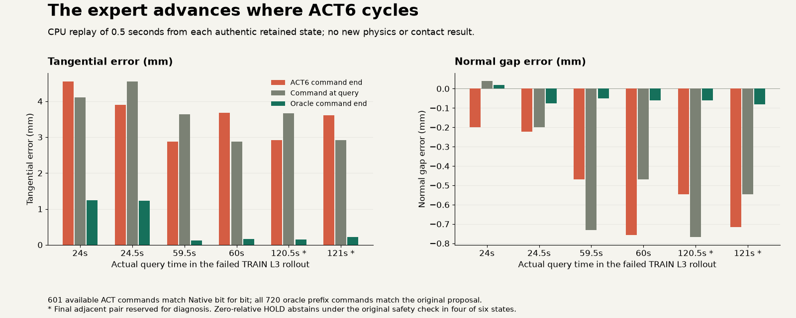
At this stage, the proposed next treatment was a capped 1,000 update warm start to add the four admitted query origins and increase sampling of existing near precontact conditional windows across TRAIN bodies. The original physical tests still determine usability; all four development cases must pass before the frozen fresh identity benchmark.
Seventh treatment · ACT7 · closed November 7 at 12:26 UTC
A short repair.
Four deadline failures.
ACT7 completed 1,000 new updates from ACT6’s selected step 18,000 with fresh AdamW, emphasizing the 66 static conditional origins within 6 mm. Four genuine old TRAIN query states supplied 58 computed future cells; the two reserved queries supplied no optimization labels. No new physical demonstrations were added. Full native TRAIN / selection VAL evaluations ran at 500 and 1,000; both candidates were saved, and only the selected final step 1,000 received full CPU equivalence. Raw target error worsened to 8.503 / 12.247 mrad, from ACT6’s 6.233 / 9.814. All four actual known development cases failed the unchanged L2 deadline, without contact or hold. Their owners and independent physical audits closed normally; this was not an infrastructure failure. The model remains unqualified.
| Known body and target | Native ticks | Original physical verdict |
|---|---|---|
| TRAIN p001120 · R3 | 29,041 | Fail: L2 120 second deadline, no hold |
| TRAIN p001120 · L3 | 29,041 | Fail: L2 120 second deadline, no hold |
| Selection VAL p000923 · R3 | 29,041 | Fail: L2 120 second deadline, no hold |
| Selection VAL p000923 · L3 | 29,041 | Fail: L2 120 second deadline, no hold |
Compare commands from the failed states. A separate CPU diagnostic compared twelve fixed adjacent queries from R3 and L3 on the same known TRAIN body, using measured H2 and joint position plus the retained interpolator command position, velocity, acceleration and three command seam. All twelve oracle proposals passed the original full mesh and posture preview and reduced the diagnostic pose error V; ACT7 reduced V in only three. Replaying its prefixes reproduced all 1,358 available Native commands bit for bit. R3 commands remain near 3 mm while oracle endpoints reach 0.39–0.69 mm; later L3 commands remain near 10.68 mm versus 6.65–6.84 mm. The oracle futures were not executed. Every proposed origin remains ineligible for training, and all four actual failures remain unchanged.
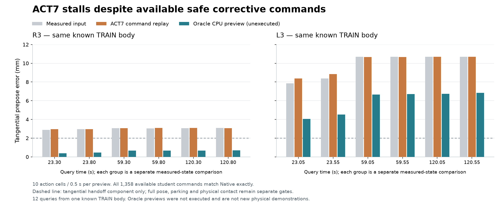
Historical checkpoint. ACT8 is the next controlled sampling test. The existing bank has 880 genuine dynamic native prepose origins and 4,382 planned ideal tracking origins within 12 mm, compared with 66 static conditional origins within 6 mm. It samples that corridor in 16 of 32 native and 4 of 8 planned slots, keeping conditional and oracle sampling, architecture, loss, physics and ACT6 initialization fixed. ACT8 has now completed its fixed 1,000 update sampling test, full native evaluations at 500 / 1,000 and CPU equivalence for selected step 1,000, with no new labels. Final TRAIN / selection VAL error is 7.499 / 12.405 mrad; both remain worse than ACT6. This is a closed offline result; native physical validation is pending. The eight fresh identities / 32 scenarios remain unopened, with zero fresh cases executed.
Closed demonstration result · Source32 · November 7
Replay the student approach.
Recover from the measured state.
The earlier ACT8 note records the pre-native checkpoint. Later ACT8 TRAIN runs supplied four fixed command-prefix cuts. Each prefix was actually replayed in Isaac before the expert recomputed a recovery from the resulting measured state. All four independently passed the full original physical checker, producing 58 clean new recovery training windows. This is measured recovery data from one known TRAIN body, p001120, at R3 and L3. It adds neither body diversity nor a learned-policy success.
The reader repair did not create a simulation result. The compact-teacher STOP reader V1 admitted zero windows. Its failure came from missing duplicate neutral observer fields in that format. The explicit V2 reader verifies the real original STOP, input/output digests, object and owner identities, and 240 Hz commands through the unchanged full checker. The original simulations existed; V1’s negative evidence remains retained.
Historical snapshot · November 7, before development closed. The original 3.5–4.5 N continuous hold, force, Hall, stroke, disk-plane, forbidden-contact, release and home gates remain fixed. ACT9’s separate Source34 training completed exactly 1,000 updates, selected the fixed final step 1,000 and passed its own full CPU equivalence. ACT9 has no closed physical result in this update: the four known development cases are being evaluated, fresh cases executed remain zero, and the model is not accepted. ACT remains state17/H2 learned L2 with analytic Hall L3; these demonstrations establish no moving-patient, clothing, continuous ten-point, hardware or population result.
Ninth treatment · ACT9 · closed known development · November 7
A new TRAIN L3 completion.
The selection body still fails.
Question and treatment. Do the 58 measured recovery windows help the learned approach complete contact? ACT9 warm started from ACT6’s selected step 18,000 with fresh AdamW at optimizer step zero, completed 1,000 new updates, selected the fixed final update 1,000 and passed its own full CPU equivalence. This is not its lifetime training total. It retains official ACT with posture head v2, state17 and two observations (H2), H20 prediction / E10 execution, learned L2 approach and analytic Hall L3. No expert L2 fallback is used.
Closed result: 2/4 independently qualified. Known TRAIN p001120 passes R3 and L3 through contact, hold, release and home. Known selection VAL p000923 fails both targets at the original 120 second L2 deadline. All four workers and the owner closed normally, with zero infrastructure errors and unchanged Source34 code.
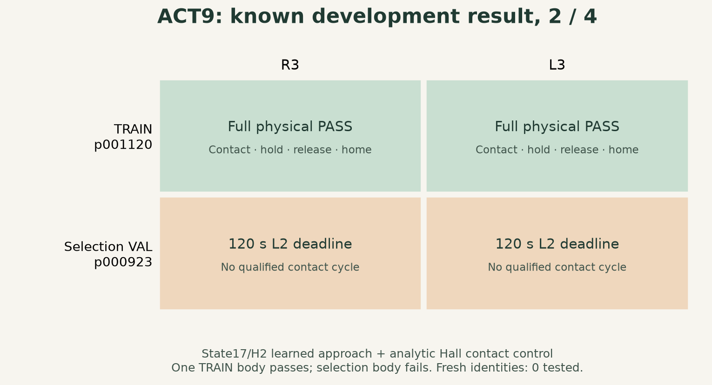

Geometry metadata correction. The original plane radius is 23 mm (diameter 46 mm); the earlier Source32 diameter field was a reporting typo. The physical gate is unchanged.
Fit is narrower evidence. On those 58 TRAIN windows / 479 valid future cells, ACT target MAE is 2.060 mrad versus HOLD 21.237 and constant velocity 13.668. No horizon20 labels are available: this measures valid prefixes, not full H20 or held out fit, and does not explain the physical result causally.
Limit and next reason. This is a new known TRAIN L3 completion. ACT6 also qualified 2/4 with different passed cases, so this establishes no overall improvement over ACT6. The added recoveries come from one TRAIN body, establishing neither diversity nor generalization. The eight fresh identities / 32 scenarios remain unopened, with zero tested; ACT9 is not accepted. The remaining selection failures motivate recovery data across bodies before another model claim.
Next data experiment · ACT10 preparation · November 7
Five TRAIN bodies.
274 full H20 windows.
Question and result. ACT9’s selection failures motivate measured recovery examples across bodies. The fixed late DART expert pilot retained 20 planned cases: 17 were prepared and 17/17 independently qualified; three were CPU plan unavailable, which does not prove geometric unreachability. This is expert data qualification. The ACT10 model is not accepted.
Experiment steps. Five TRAIN bodies, two known real poses (474/476) and R3/L3 received at most 0.015 rad joint perturbations, triggered 35 mm from skin. The earlier Source34 pilot aborted at dart02 after five numerical routes failed. Source37 preserves the original 29 candidates, then adds bounded goal near detours for late DART only. Reconstructing that failed state reproduced measured q, dq, H2 history, history times and all 120 perturbation commands exactly. The new search rejected 44 candidates before a 264 command route succeeded. Canonical goals, physical limits and numerical guards stayed fixed.
| Measured recovery source | TRAIN bodies | Episodes | Windows |
|---|---|---|---|
| Earlier query recovery | 1 | 4 | 58 valid prefixes |
| New late DART expert pilot | 5 | 17 of 20 planned | 274 full H20 |
| Combined recovery banks | 6 | 21 | 332 |
Coverage limit. Of 332 measured recovery windows, 53 meet dynamic prepose error ≤12 mm. All 53 come from the earlier query32 bank on one TRAIN body: R3 17 / L3 36. The new DART bank contributes 0/274 within that corridor across all 17 slots (164 R3 / 110 L3 full pool windows). Its five new bodies expand the full measured recovery pool; the measured near handoff corridor still covers only the earlier body. This 12 mm prepose error criterion is separate from the 35 mm skin trigger used during collection.
Label boundary. All 274 new current states occur after perturbation, with 5,480 valid H20 future cells and no positive action labels before or during perturbation. Seventeen earlier perturbation measurements appear only as causal H2 context. No labels were repaired and normalization was not refitted. The computed auxiliary covers 16 TRAIN identities separately; it is not physical recovery data. The native 8,373 TRAIN / 2,345 selection VAL origins are unchanged.
The 17 qualified episodes took 2.41 hours of aggregate owner wall time, about 7.07 episodes/hour. This mixed case observation is not a causal speedup comparison. Contact, continuous hold, disk alignment, clearance, release and home retain the original gates.
Declared ACT10 training; results pending. CPU preparation and official integration passed. One Source41 GPU run started at 23:48:48 UTC on November 7, warm starting all 54 ACT9 tensors with fresh AdamW at step zero. The protocol declares 20,000 new updates, evaluation every 500, and the earliest masked H20 MAE minimum across all 40 full native selection VAL evaluations. State17/H2, H20/E10 and posture head v2 retain learned L2 with analytic Hall L3; RGBD is recorded, not a neural input, and there is no audio. Completion, selected checkpoint, ACT10 known development and fresh results remain pending at this snapshot.
Closed ACT10 / V8 · November 8, 2026 UTC
A completed training run.
Two different L3 failures.
Question and attempt. Does the broader recovery bank close ACT9’s approach failures? ACT10 completed 20,000 new updates and all 40 full native evaluations, every 500 updates on 8,373 TRAIN / 2,345 selection VAL origins. The earliest minimum selected update 17,000: raw masked H20 joint target MAE 9.498 mrad on selection VAL, versus 11.824 at update 20,000. The original owner closed normally and the selected model passed its own full CPU equivalence.
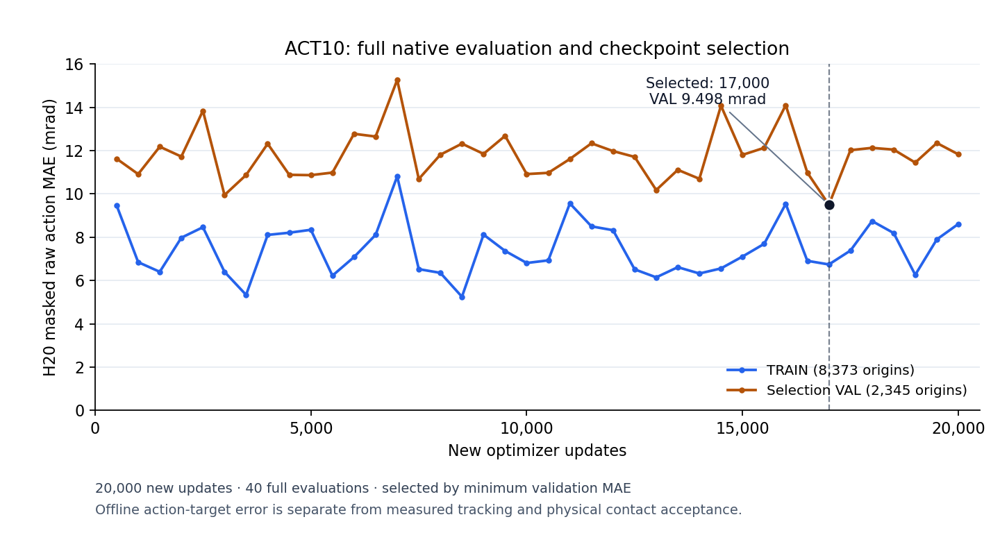

Closed development: 2/4. All four cases use known pose474. ACT9 also passed 2/4, with different passed cases, so this shows no aggregate improvement. Selection VAL participated in checkpoint selection; it is not untouched fresh evaluation.
| Body / role | Site | Independent physical verdict |
|---|---|---|
| p001120 / TRAIN | R3 | Pass: hold, release and home |
| p001120 / TRAIN | L3 | Fail: analytic ALIGN posture rejection before ALIGN motion |
| p000923 / selection VAL | R3 | Pass: hold, release and home |
| p000923 / selection VAL | L3 | Fail: original 120 s learned L2 deadline; no 3 mm coarse entry |
These are the exact original encoded MP4 bytes, with every captured frame fully decoded and checked; posters are exact chosen decoded frames. H.264 is lossy, so no identity with preencode RGB is claimed. Playback follows simulation time. The model remains structured ACT state17/H2, four attention heads, posture head v2 and H20/E10: neural L2 plus analytic Hall L3. RGBD is recorded, not a neural input; no audio or VLA.
Two diagnoses, two next steps. TRAIN L3’s CPU reconstruction has twelve valid IK knots plus the start knot, but cubic interpolation undershoots the soft posture limit. The original knots were not saved, so this is not a bit exact reconstruction of the original commands. An internal IK reserve of 0.0001 rad passed 563 unchanged CPU checks in 9.57 s; it has not been executed or qualified as an Isaac repair. The separate selection VAL L3 failure motivates recovery supervision, not weaker physical gates. No selection VAL labels were exported or trained.
Coverage and next motivation. The existing native Base29 corridor has 880 windows across four bodies. The measured recovery corridor has 53, all on the earlier query body; new DART contributes 0/274. A two TRAIN case probe found 121 discarded valid near windows (83 full H20 / 38 partial); that does not requalify all 17 episodes. ACT11 enrichment across all 17 plus eight fixed on policy TRAIN recoveries is planned; the new enrichment is not collected and the model is not retrained.
Acceptance remains closed. Fresh gate false, zero fresh cases tested, not 0/32 successes. These known static bare SMPL cases at R3/L3 establish no new pose, all ten point, moving patient, hardware or clinical generalization. The earlier Astra eight case comparison remains a separate cohort. Download the scoped scalar evidence and media bindings.
ACT11 data integrity · Source44 closed · November 8, 2026 UTC
Before training,
prove the data can be read.
Research question. Does a completed collection actually supply valid teacher labels? The previous Source43 batch finished all eight episodes, with positive worker reports and preserved raw recordings. Yet the independent data reader admitted 0/8: the compact writer had omitted the native STOP witness needed to verify parking. A reported execution result cannot replace the evidence required to train.
Attempt. Source44 added that witness, then ran one actual TRAIN case: p000758 / known pose476 / R3. The selected ACT10 student at update 17,000 executed the prefix before expert intervention. Of the original eight declared slots, one ran and seven were intentionally unlaunched. The approved geometry, camera, force, hold, collision, parking and home standards stayed fixed.
| Collection | Worker reports | Independent data admission |
|---|---|---|
| Source43 · eight executed | 8 positive; normal close | 0/8 · missing native STOP witness |
| Source44 · one executed | 1 positive; normal close | 0/1 · mixed precision pose comparison |
Observed result. The new STOP witness passed independent parking and physical route checks. Measured joint state, H2 history, clocks and actual poses also matched their independent raw records exactly. The full reader then rejected the episode by comparing native PhysX float32 poses with double precision analytic forward kinematics using a single 1e−10 matrix tolerance, mixing translation and rotation units. Across 482 captured pose samples, the largest position difference was 4.52e−7 m (about 0.00045 mm), and the largest rotation difference was 1.31e−6 rad. These are representation diagnostics, not measured contact accuracy.
Limit and next reason. This closed capture supplies zero qualified training episodes; it started no ACT11 training or fresh evaluation. A reader repair now checks length and rotation angle separately within a declared float32 representation envelope and retains the actual signed slider reading, including the tiny negative value at the intervention boundary. It relaxes neither exact comparisons of the same source records nor any physical acceptance standard, and it does not prove PhysX accuracy. A new actual capture must pass the full independent reader and yield valid teacher windows before larger collection or training; software tests alone cannot supply that result.
ACT10 remains 2/4 known development cases, not accepted; fresh cases tested: 0. The policy remains state17/H2 ACT for neural L2 with analytic Hall L3. RGBD is recorded, not a neural input; there is no audio or VLA. This single static TRAIN body establishes no population, all ten point, moving patient, hardware or clinical result.
ACT11 / V9 · 20k fit closed, native verification blocked · November 8, 2026 UTC
Training complete.
Native check blocked.
Question and mechanism. Can the learner’s difficult approach states supply genuine recovery supervision without weakening the contact test? Source45 separates the native float32 versus analytic pose comparison into length and angle, within a declared representation envelope. It retains the actual signed slider measurement. The earlier 1e−10 mixed matrix test rejected submicrometre translation differences and microradian rotation differences; this repair addresses that representation mismatch. Exact agreement between records from the same source and every original physical gate remain required. The envelope does not establish PhysX accuracy or permit larger physical errors.
Actual collection. The first launch with four workers stopped at the unchanged 2 GiB available RAM guard, with no final worker result; that failed attempt remains preserved. A new launch budgeted 12 GiB per native worker plus a 2 GiB reserve, with at most two workers. All eight declared TRAIN collections closed normally and the independent production data reader with the original physical checks qualified 8/8 for data, yielding 133 real teacher windows. Each collection starts with the selected ACT10 learner prefix and then uses expert intervention. These eight recoveries demonstrate admissible teacher data, not eight successful ACT11 policy trials.
| Evidence stage | Actual result | What it supports |
|---|---|---|
| Learner prefix + expert recovery | 8/8 independently data qualified · 133 windows | Teacher supervision from measured learner states |
| Enriched measured recovery bank | 17 sources · 2,064 windows | More genuine query opportunities in existing captures |
| Earlier measured query bank | 58 windows · genuine Original41 reader | Retained earlier qualified recovery supervision |
| Actual CPU preparation | Passed in 182.839 s · zero optimizer steps | Data and training inputs are ready |
| New ACT11 / V9 model | 20,000 updates · 40 evaluations · native admission blocked | Closed fit and official CPU equivalence; no new Isaac verdict |
What enrichment changes. The 2,064 windows come from the existing seventeen measured sources, with the original 274 windows retained as an ordered subsequence. The genuine Original40 physical audit passed before export. This increases real query coverage within those captures; it does not add 2,064 episodes, new people or independent trials. The earlier measured query bank retains 58 windows. Bank sizes alone do not show improved near handoff coverage or a better policy.
Preparation result. Actual CPU preparation reused all three qualified banks while keeping the base 8,373 TRAIN / 2,345 selection VAL origins and normalization unchanged. The task subset was frozen before optimization. A separate official CPU forward and backward integration check completed with a finite gradient; poisoned padding produced zero backward contribution in padded cells and all 54 model tensors stayed unchanged. Both checks performed zero optimizer steps. These results verify usable inputs and the training path; they do not establish the result of the new training run.
Closed training result. ACT11 / V9 completed 20,000 new optimizer updates and all forty evaluations. The original owner closed normally, and official CPU equivalence passed for all forty retained candidates. The stored selection is update 9,000, with a dimensionless task score of 0.827151 and selection VAL joint target MAE of 12.309 mrad. Selection uses the worst target’s normalized TCP score, rather than the smallest joint MAE. These are offline prediction quantities, not contact success.
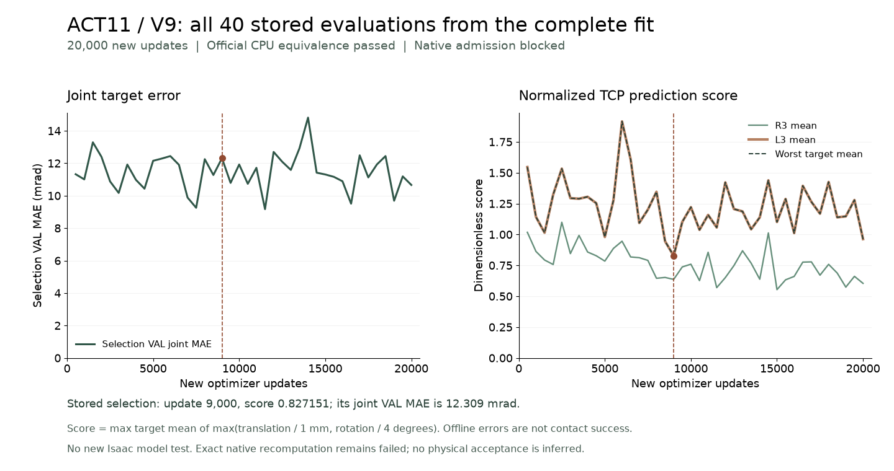

Native verification is blocked. The separate native check after the owner closed rejected exact metric recomputation, so the selected model is not admitted for Isaac testing. A targeted diagnostic found the same prediction and reduction input bytes, but the first candidate’s joint MAE differed by two units in the last place between NumPy 2.3.1 and 2.2.6. Update 9,000’s task score matched exactly. This does not establish exact native agreement for all forty candidates. The validation environment’s numerical consistency remains unresolved; this is not yet evidence of a physics or closed loop model failure. The failed receipt is retained, and no new Isaac model test has run.
Limit and next experiment. ACT10 remains the latest policy with a closed Isaac result: 20,000 updates, selected update 17,000, 2/4 known development cases; not accepted. ACT11 / V9 must first resolve native verification and then test the selected model on all four known cases before the frozen fresh gate can open. Fresh cases tested: 0; this is not a 0/32 success score. No new pure ACT11 video exists at this checkpoint. The Source44 recording above keeps its original rejected data verdict and expert intervention label.
Scope remains state17/H2 neural L2 approach plus analytic Hall L3. RGBD is recorded, not a neural input; no audio or VLA is used. These static bare body R3/L3 collections establish no all ten point, general population, moving patient, real robot or clinical claim. Read the scoped evidence and source digests · Inspect the Source45 reproduction boundaries. The public capsule supplies partial code and CPU fixtures; native data and runtime are not bundled.
ACT11 / V9 · 本地草稿，Known4 已关闭 2/4 · 2026 年 11 月 9 日 UTC
四例已关闭，合格 2/4。
模型未验收，新身份未开放。
研究问题。 补入真实学习器状态上的专家恢复示范后，ACT 能否在原有门限下完成接近、交接、接触、保持、释放与归位？前节保留当时的阻塞记录；下面区分已关闭的历史比较、当前模型配置和本轮已关闭的四例开发评估。
当前配置。 Source45 的 ACT11 / V9 从 ACT10 的已选第 17,000 步权重开始，完成 20,000 次新的优化更新；四十个候选中仍选择第 9,000 步。新增八次合格的学习器前缀 + 专家干预采集提供 133 个教师窗口，另有 58 个早期查询窗口和从既有采集中更密集提取的 2,064 个窗口。窗口数不等于 episode 数，数据资格也不等于学习策略成功。
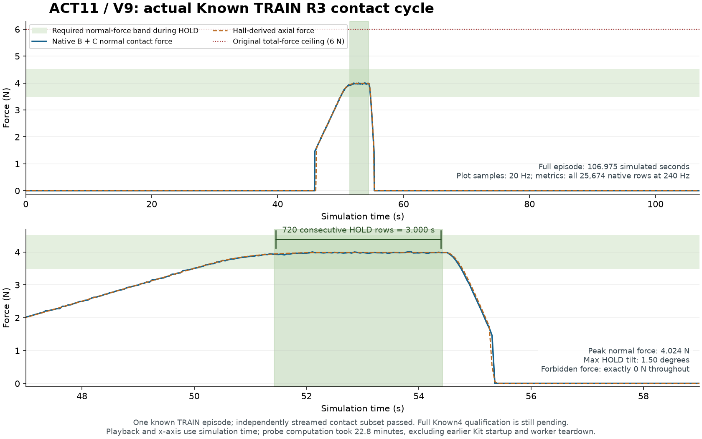

已关闭负例 · 已知 selection VAL p000923 / R3
接近目标后，仍未满足交接。
实际 ACT11 执行了 241 次模型查询、29,041 个原生物理步，在原始 120 秒 L2 时限内未进入交接，按原判据关闭为负例。失败发生在 STOP、ALIGN 与解析 L3 之前；没有专家 L2 兜底。全行流式诊断中的物理违规行数为零，仍不能替代完成接触流程的要求。
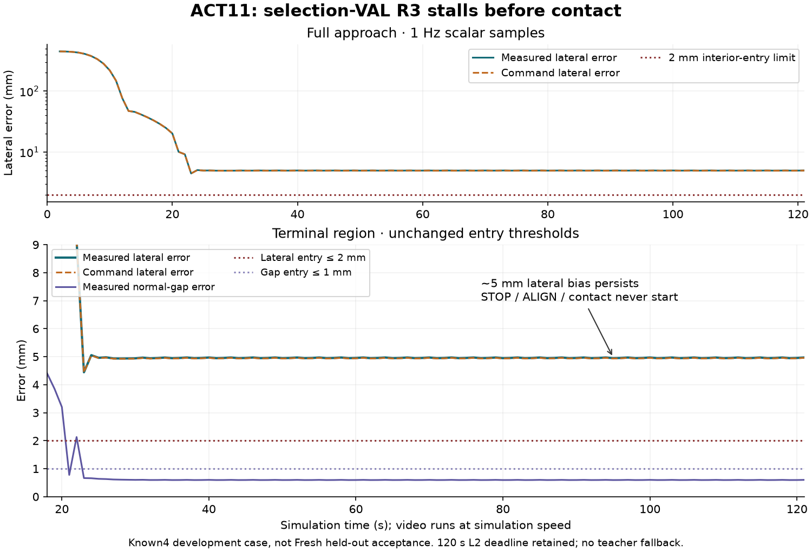

| 交接条件 | 终态实测 | 原始上限 |
|---|---|---|
| 切向误差 | 4.971 mm（命令 4.958 mm） | 2 mm · 未满足 |
| 法向间隙误差 | 0.600 mm | 1 mm |
| 旋转误差 | 0.230° | 4° |
| 速度 | 0.442 mm/s | 10 mm/s |
早期在约 21.4875 秒短暂进入较粗接近区间；最接近的 21.5 秒诊断网格点虽有 1.831 mm 切向误差，法向间隙误差仍为 1.840 mm、速度为 19.545 mm/s，未同时满足交接条件。随后出现侧向漂移。终态命令与实测均停在约 5 mm 侧向残差，后续实验需要直接检验任务空间收敛，不能只凭较小关节拟合误差推断完成交接。
诊断中的 860 个 ≤6 mm TRAIN 窗口，其最后有效教师目标均满足内部条件并减小误差；on-policy 数据池有 57 个近目标窗口，另一早期 query 数据池有 28 个近目标窗口；二者均无至少 E10 的有效未来，也无准静态 H2 窗口。真实物理教师轨迹的 TRAIN 身份并集为 6 个，计算辅助训练涉及 16 个身份；两者重叠，不能将计算曝光称为十六个真实采集身体。V9 的训练损失仍是归一化关节误差，TCP 几何只参与检查点选择；平均任务分数 0.827 不保证每次闭环满足交接。本节关闭时，V10 尚未训练、未做闭环评估：当时计划在同一次 ACT 输出的真实有效教师动作上加入可微正运动学任务空间监督，保留原关节损失与既有计算/静态末段输入，只对既有有效 E10 前缀和近终点单元增加训练权重；本项准备不代表新增原生采集或合格覆盖；不把中间动作强制为终点，不伪造保持或未来动作。原始物理门限继续保留。查看关闭负例、条件与诊断范围；后续实际 V10 训练见下一节。
| 实验与范围 | 观察到的结果 | 可支持的结论 |
|---|---|---|
| 历史匹配比较 2 个留出身份 × 2 个已知姿态 × R3/L3 | 解析专家 8/8 旧 ACT 第 4,500 步 0/8 Astra 高层技能 + 解析执行 8/8 | 同一组 8 个场景，共 24 次实际回合；与当前 ACT11 属于不同模型和队列 |
| ACT11 / V9 4 个已知开发案例 | 四例均已执行并关闭：两个 TRAIN 通过，两个 selection VAL 均因 120 秒 L2 时限失败 | 2/4（50%），仅已知开发集；模型未验收 |
| 后续新身份配对测试 8 身份 × 2 已知姿态 × R3/L3 | 未开放；32 场景、专家与 ACT 共 64 个计划槽位均保留为计划 | 本轮 V9 未满足 4/4 开放条件；新身份执行 0 例，不能记作 0/32 成功率 |
历史结果的含义。 上表历史链已在 11 月 6 日关闭，24 次 native episode 及其 owner 均正常结束、排空并释放资源。旧 ACT 的八次负结果包含六次姿态门限和两次网格间隙门限。Astra 确有 24 次 gpt-6-astra / codex_exec 调用，负责高层技能选择，底层运动与接触由 GivenContactExpert 解析执行；它不是学得的底层运动策略或 VLA。该结果不能因果证明 Hall 或深度输入的贡献，也不能用两个身份推断一般人群表现。三组并行度不同，不能据此比较速度。
一条工程经验。 后续真实 Official 全四十候选证书解决了前节的跨 NumPy 诊断问题，权重和门限未改。最初四次测试虽然已加载权重，但因进程身份 start_ticks 的整数与字符串不匹配，查询数和物理步数均为零。Source48 只修正身份传输序列化并加强四字段类型精确匹配；原 guard、CPU bridge 与物理逻辑不变。实际 Linux 进程及 exec 一致性、重新执行的四十候选核验已经通过。这些是管线证据，不是模型物理验收。
最终结果与下一步。 四个固定 Known4 开发案例已全部执行并完成原始资格核验：p001120 的 R3/L3 均通过，p000923 的 selection VAL R3/L3 均在原始 120 秒累计 L2 时限失败，最终为 2/4（50%，仅已知开发集），模型未验收。四例没有基础设施失败；worker 与 CPU 子进程正常结束并回收，原 owner 正常关闭、排空并释放资源。Fresh 实际执行 0 例，未开放，成功率未定义；不能记作 0/32。本节记录的是 V10 训练前的 V9 关闭结果；V10 的后续进展另见下节。前节的 104.65 秒采集视频保留其专家干预标签。查看最终四例判据、关闭证明与来源哈希。
解释范围。 神经策略只读取两帧 state17：7 个关节量、3 个目标相对 TCP 位置量、6D 旋转和 1 个给定目标置信度。H20/E10 的动作单元为 20 Hz，名义决策频率 2 Hz；学习的 L2 接近交接后由解析 L3 接触、保持和释放，不使用专家 L2 兜底。RGBD 仅记录，Hall/ADC 用于解析 L3 与安全控制，均非神经输入；这些静态裸身 R3/L3 仿真不支持音频、全部十点、移动患者、真实机器人或临床结论。查看小型报告、独立分母与来源摘要哈希。
ACT12 / V10 · Source52 四例已关闭 · 开发集 2/4，模型未验收 · 2026 年 11 月 9 日 UTC
任务空间监督之后，
已知开发集仍是 2/4。
研究问题。 V9 的 Known4 最终为 2/4：两个 TRAIN 案例通过，两个 selection VAL 案例触及原始 120 秒 L2 时限。R3 负例中，命令与实测都保留约 5 mm 侧向误差，失败发生在 STOP、ALIGN 与解析接触之前。V10 要检验：直接监督教师动作的 TCP 位姿，能否改善这种接近目标却无法交接的情况？
尝试与配置。 保留约 266 万参数的 state-only ACT：两帧 state17 输入（H2），预测 20 步（H20），每次执行前 10 步（E10），动作 20 Hz、模型查询 2 Hz。沿用 Source45 第 9,000 步权重，使用从零计数的新 AdamW。在同一次 ACT 输出上，以固定 132 mm TCP 偏移的可微正运动学监督真实有效教师动作的平移与旋转，保留原关节掩码损失（本轮 VAE 关闭，KL 不启用）；新增项系数 0.25，尺度为 1 mm / 4°，有效 E10 与已观测近目标单元加权，缺失未来仍遮罩。物理教师 TRAIN 身份并集仍为 6 个，另有涉及 16 个 TRAIN 身份的静态计算辅助数据，两者重叠，不能称为十六个真实采集身体。selection VAL 继续只选检查点，不参与梯度；Fresh 未曝光。
实际训练与离线结果。 Source49 完成 20,000 次新的优化更新，留下 401 条训练日志和每 500 步一次的 40 次评估。既有选择规则选中第 7,000 步，任务分数 0.803489（R3 均值 0.723016，L3 均值 0.803489）。这些无量纲离线分数不是毫米误差或接触成功率。训练后的原始来源核验失败，Source49 的原始退出码 1 与失败标记继续保留。后续 Source50 与新 Source52 分别核验已有权重；Source52 实际 CPU 恢复耗时 455.14 秒，精确核对全部 40 个候选、选定模型 54 个张量，以及最终 54 份 AdamW 状态的 20,000 步计数，没有重训、新优化更新或 GPU 执行。恢复证书不能替代闭环验收。
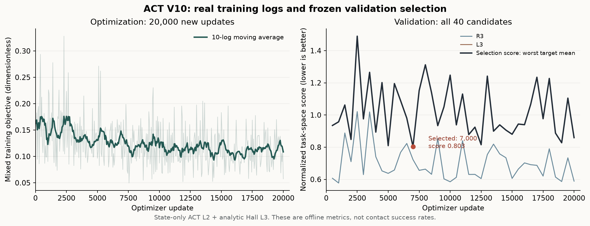

四例全部执行；失败留在原分母中。
实际闭环结果。 Source52 用同一份第 7,000 步 V10 权重完成全部四个 Known4 开发案例，独立原生资格核验为 2/4（50%），模型未验收：TRAIN p001120 的 R3/L3 通过，selection VAL p000923 的 R3/L3 均在原始 120 秒 L2 时限失败，未接触、未进入 HOLD。四个 worker 与 CPU 子进程正常关闭，CPU 均为退出码 0、已回收且无终止信号；本轮没有基础设施失败。与 V9 一样，仍是开发集 2/4，不能声称成功率提高或泛化通过。Fresh 实际执行 0 例、完全未开放，成功率未定义，不是 0/32。
| 已知案例 | 接触力峰值 | 合格 HOLD | HOLD 最大倾角 | 原始资格 |
|---|---|---|---|---|
| TRAIN p001120 / R3 | 4.0099 N | 3.000 s | 1.49995° | 通过；释放与归位通过 |
| TRAIN p001120 / L3 | 4.0071 N | 3.000 s | 1.99952° | 通过；释放与归位通过 |
| selection VAL p000923 / R3 | 0 N | 0 s | — | 原 120 s L2 时限失败 |
| selection VAL p000923 / L3 | 0 N | 0 s | — | 原 120 s L2 时限失败 |
合格 HOLD 同时满足原始力与平面条件，两个 TRAIN 均连续保持 720 个物理 tick（3 秒），禁碰力为零，随后完成 48 tick 释放确认与 120 tick 归位稳定。它不同于较长的单纯接触时长。VAL 未进入 HOLD，倾角未知，以“—”表示，不能填为 0°。四例未改变权重、几何、交接或安全门限。
为什么接近之后停住。 对已关闭 R3 的仿真 90–92 秒、481 个原生事件做只读检查：模型原始 setter 目标经正运动学换算，侧向误差均值为 3.49767 mm；独立读取 Native 腕部位姿换算的实际 TCP 为 3.49360 mm。发出命令与实测关节的 FK 位姿距离均值仅 0.01027 mm。主要 1.3–1.6 mm 缺口已在模型原始动作中，不能归咎于力反馈或把 PD 跟踪误差当作主因；这也不是严格不动的数学固定点，原生记录仍有小幅周期运动。原交接要求命令与观测侧向误差均 ≤2 mm、间隙误差 ≤1 mm、完整旋转误差 ≤4°，并满足稳定条件；不放宽任何门限。本轮 VAE=False、关节噪声为零，不能用不存在的 posterior 分支或未启用的增强解释失败。
覆盖证据与局限。 真实 native TRAIN 的 860 个 ≤6 mm 近目标窗口中，692 个（80.5%）不足 H20，382 个不足 E10；小于 2 mm 的 35 个窗口只有 1–2 个有效未来动作。缺失未来仍正确遮罩，没有伪造保持标签。同时存在 66 个理想静态近目标计算窗口、覆盖 16 个计算辅助 TRAIN 身份，先前 oracle 又集中于 p001120，所以不能说完全没有 near 数据，也不能把 6 个实际 TRAIN 与 16 个计算身份相加称为 22 个真实人体。这支持检验真实恢复覆盖的不足，尚未证明它是唯一原因。 L3 的约 20.97 mm 来自最后一次神经网络输入观测的模型 FK 侧向量（请求 241，仿真 120.85 秒、原生行 29004），早于原生回合的 121.004 秒关闭时刻（累计 29,041 个 tick）；它不是独立测量的 Native 终态 TCP。
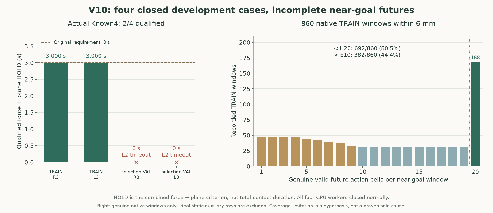

下一步动因：先补真实恢复覆盖。 预声明的 V11 小实验仅针对已有 6 个实际 TRAIN 身份 × R3/L3 × 一种真实已知坐姿（pose2），共 12 个分层、最多 24 个恢复回合：保留真实 H2 与原始 setter 标签，在 2–6 mm 精纠偏和 6–25 mm 恢复区域取得有效 E10，并均衡身体、目标和姿态覆盖。它只增加 state-only ACT 补充数据 bank，模型、损失、归一化和安全门不变；随后计划 1,000 次新更新，只评估一个预声明的最终候选。这是计划，不代表新增数据、训练完成或验收结果，也不是完整多模态 M2 或 VLA；Fresh 不参与采集、梯度或选择。
历史 Source51：物理子集通过，完整退出失败。
保留早期快照。 以下只记录 Source51 截至 07:03 UTC 的诊断与当时待验证项；其中 0/4 和未启动 VAL 属于该次已取消批次。后续 Source52 的四例关闭结果见上方，不覆盖这里的原始 SIGTERM 负证据。
单例物理诊断。 Source51 使用第 7,000 步 V10 权重，在已知 TRAIN p001120 / R3 完成 55 次真实学习 L2 查询，无专家 L2 兜底；交接后的接触、保持、释放与归位由解析 Hall L3 控制。未改动的原生物理检查核对全部 26,263 个 240 Hz 事件：连续 HOLD 720 tick（3 秒），法向力峰值 4.010 N、Hall 峰值 3.990 N，禁碰与非前端力均为零，压缩峰值 2.525 mm、HOLD 最大倾角 1.500°，随后完成 48 tick 释放确认与 120 tick 归位稳定。这只证明该 TRAIN 单例的物理子集通过；V9 的同一 TRAIN R3 原已通过，因此不能据此声称改善了 VAL。
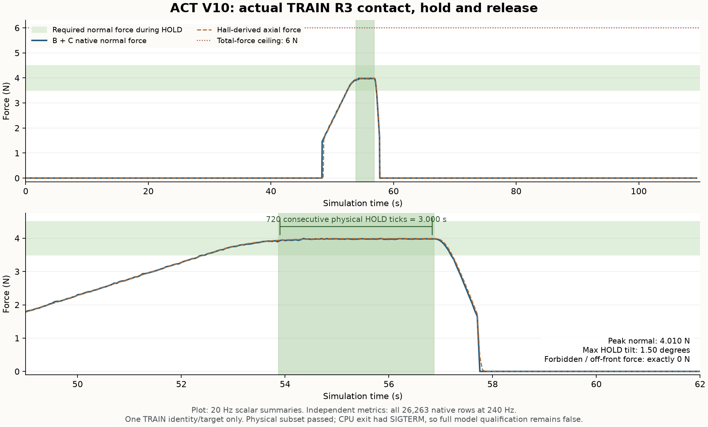

局限与下一步动因。 本例虽完成物理循环，CPU 退出记录在退出码 0 之外还含 SIGTERM，完整退出门槛仍失败。剩余批次已通过原守护流程取消：第二个 TRAIN L3 中断，两个 selection VAL 尚未开始；固定 Known4 为 0/4 合格，V10 模型仍未验收，不能把单例物理子集通过记作模型成功。Fresh 实际执行 0 例、未开放，成功率未定义，不是 0/32。新 Source52 只优化 EOF 关闭时的元数据处理，原 2 秒等待、权重、物理条件均未改变；它的 CPU 恢复通过还不能证明整体退出已修复。下一步先完成与实际启动条件一致的完整退出探针，再重新执行 Known4；四例全部合格后才开放 Fresh 配对测试。查看实际证据与仍待验证的门槛。
解释范围。 ACT 神经网络不读取 RGBD 或 Hall；RGBD 只记录，Hall 用于解析控制，没有音频输入。本轮仍是给定 3D 目标及完整目标位姿、两种已知坐姿下的静态裸身 SMPL R3/L3 仿真，不支持 VLA、全部十点、移动患者、真实机器人、临床或一般人群泛化结论。旧模型与旧队列的历史比较不能填作 V10 基准结果。
ACT13 / V11 · Source53 · 四例独立核验关闭 · 开发集仍为 2/4 · 2026 年 11 月 9 日 UTC
均衡 Isaac 仿真纠偏，
仍未解决两例开发失败。
研究问题。 Source52 在原始四例开发测试中仍为 2/4：TRAIN 两例通过，selection VAL 两例在原 120 秒 L2 时限失败。上一节提出采集新恢复示范；本次先检验一个更小的改变：已有 Native Isaac 专家示范仿真窗口中，精细纠偏是否因采样比例和身体分布而得到不足的训练曝光？本次闭环结果为同样的 2/4，未解决两个 selection VAL 失败。
一次采样改变，零条新示范。 重新清点已获优化准入的 Native Isaac 专家示范仿真窗口，得到 1,324 个窗口：186 个精纠偏、1,138 个恢复，来自 12 个实测仿真来源，覆盖 6 个 HuMMan 衍生 TRAIN 身份 × R3/L3 × 一种已知 pose2（p000476_a001231_f0023）。这些窗口来自实际执行的仿真轨迹，不是实体机器人或真人患者实验；本轮没有新增采集，也没有把 16 个静态计算辅助身份加进仿真采集身份数。仅将原 native32 中的 8 个实测近目标抽样位替换为 4 个精纠偏 + 4 个恢复；每个区域各 2 个 R3、2 个 L3，并轮转六个身体。其余 24 个 native 抽样位、planned / conditional / oracle、模型、损失、归一化和物理门槛均保持原配置。
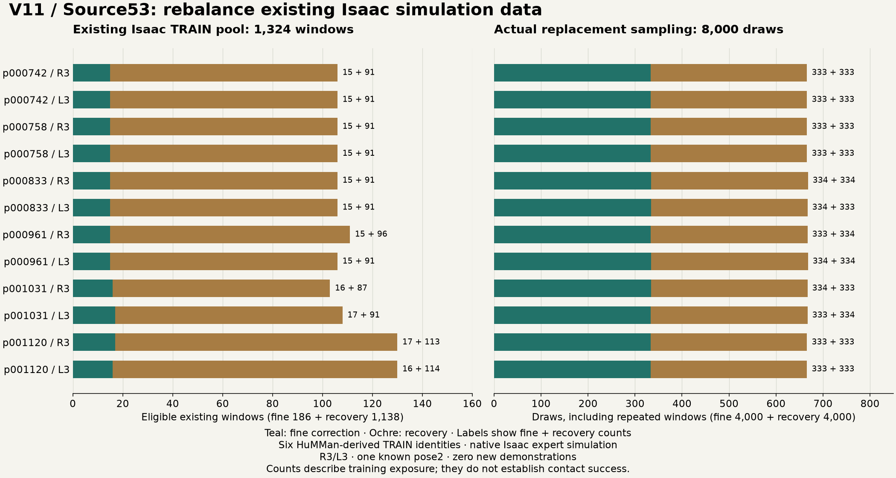

实际训练。 从经 Source52 独立恢复核验的 Source49 第 7,000 步权重热启动，使用全新 AdamW，实际完成 1,000 次更新并正常关闭；只评估预声明的最终第 1,000 步候选，validation 仅作诊断。没有恢复旧优化器，历史 20,000 步不能直接加成这份模型的有效梯度谱系。额外 1,000 次优化本身也是混杂因素，结果不能仅归因于均衡采样。
为什么训练完成还不等于贴合。 仍是 2,658,823 参数的 state-only ACT，state17/H2、H20/E10，观测 20 Hz、模型决策 2 Hz；学习的 L2 接近之后由解析 Hall L3 完成接触。ACT 不读取 RGB、深度或 Hall，这不是多模态 VLA，也不是学习到的力控制。离线动作拟合与采样计数无法证明命令和实测位姿同时满足原交接条件，更不能替代连续接触、合格 HOLD、释放、归位及正常退出的独立核验。
四例实际执行，两例通过（50%）。
实际闭环结果。 Source53 独立核验为 2/4（50%），模型未验收。TRAIN p001120 的 R3/L3 均完成原始接触、合格 HOLD、释放和归位；selection VAL p000923 的 R3/L3 均在原 120 秒 L2 时限失败，未接触、未进入 HOLD。四例全部执行，worker 与 CPU 子进程正常关闭，CPU 均退出码 0、已回收且无终止信号；没有基础设施失败。与 Source52 相同的两个案例通过，固定四例的成功率没有提高。
| 已知案例 · pose1 | ACT 查询 | 接触力峰值 | 合格 HOLD | HOLD 最大倾角 | 原始资格 |
|---|---|---|---|---|---|
| TRAIN p001120 / R3 | 42 | 4.0127 N | 3.000 s | 1.49991° | 通过；释放与归位通过 |
| TRAIN p001120 / L3 | 36 | 4.0146 N | 3.000 s | 1.99985° | 通过；释放与归位通过 |
| selection VAL p000923 / R3 | 241 | 0 N | 0 s | — | 原 120 s L2 时限失败 |
| selection VAL p000923 / L3 | 241 | 0 N | 0 s | — | 原 120 s L2 时限失败 |
两例 TRAIN 的合格 HOLD 同时满足原始力与平面条件，连续 720 个物理 tick（3 秒），禁碰、非前端与唇边力均为零，随后通过 48 tick 释放确认与 120 tick 归位稳定。它不同于 4.700 / 4.721 秒的单纯接触时长。VAL 未接触，倾角未知，以“—”表示，不能填为 0°；负例的力与时长为原生报告标量，不构成合格接触。
同批另外两段完整录像：TRAIN L3 合格回合（969 帧，96.9 秒视频 / 96.946 秒仿真，末尾 11 tick 无图像）与selection VAL L3 负例（1,210 帧，121 秒视频 / 121.004 秒仿真，末尾 1 tick 无图像）。四段均为本次实际 Isaac 仿真回合、全部捕获帧且完整解码；物理结论来自独立原生核验。
固定 pose1 为 p000474_a001230_f0000。selection VAL 曾用于模型选择并多次开发测试，属于已知开发证据，不能称为留出评估。Fresh 仍未开放、执行 0 例，成功率未定义，不是 0/32。
局限与下一步动因。 这次均衡已有数据的 1,000 步控制不足以解决两个已知 selection VAL 失败。 它不能证明所有重采样都无效，也不能证明数据覆盖是唯一原因。下一项实验的动因是检验具有实测仿真且完整 E10 未来的恢复监督；采集准备仍在核验，不代表已经取得新示范或完成下一轮训练。当前结果仅适用于给定目标的 state-only ACT R3/L3 接近加解析 Hall 接触，不支持完整多模态 VLA、全部十点、Fresh 泛化、真实机器人或临床结论。
Source56 · 新增 Isaac 专家恢复数据 · 单组资格通过，整库尚未准入 · 2026 年 11 月 9 日 UTC
第一组新恢复示范通过，
完整训练库仍缺十一组。
研究问题。 Source53 均衡旧窗口后仍是开发集 2/4，两个 selection VAL 案例仍未完成接近交接。下一项数据实验要检验：能否在原生 Isaac 物理轨迹中，取得具有真实 H2 历史、原始教师动作标签与完整有效 E10 未来的近目标纠偏窗口？本节先报告新专家采集是否合格，尚无新的 ACT 训练或模型结果。
尝试与配置。 预声明范围仍为 6 个已有 TRAIN 身份 × R3/L3 × 已知 pose2，共 12 个分层。本次只执行 near-00：TRAIN p001120 / R3 / p000476_a001231_f0023，在声明的 20 mm 偏移恢复任务中采集专家轨迹；原始几何、安全、接触与归位条件保持不变。补充 bank 的神经网络输入约定仍只有 H2 state17，监督来自原始教师动作；RGBD 被记录、Hall 用于解析接触与安全，均不是 ACT 神经输入。
| 本次实际证据 | 关闭结果 | 解释范围 |
|---|---|---|
| 分层覆盖 | 1/12 组 · 1 个专家回合 | 其余 11 组缺失，整库训练准入仍为 false |
| 完整 E10 精纠偏 / 恢复 | 49 / 201 个窗口 | 2–6 / >6–25 mm；本组配额 8 / 16；另有 9 个短未来不计入 |
| 实际采集体积 | 52,180,950 B（52.18 MB） | 总预算仍为 100,000,000 B；网页只分发小媒体与标量摘要 |
| 原生仿真时间 | 118.025 s · 28,326 tick | 单环境，原生 240 Hz |
| 原回合墙钟 | 1,648.938 s（27.48 分钟） | child 1,644.470 s；probe 1,500.346 s，计时范围不同 |
实际结果。 原 owner 正常关闭，来源归属与原生独立核验均通过，错误列表为空；near-00 达到本组窗口配额。原物理审计确认接触力峰值 4.0076 N、同时满足力与平面条件的连续 HOLD 3.000 s，HOLD 最大倾角 0.00167°（原上限 3°），随后完成释放与 canonical 归位。这是一个专家仿真采集回合通过，不是 ACT 模型验收。 250 个合格纠偏窗口来自同一轨迹，不是 250 个独立回合。
采集成本带来的教训。 前一 Source55 的原 owner 虽正常关闭，总采集量仅 34,634,896 B，仍因 10 MB 辅助审计分区耗尽而 failed_restore，缺少终态归位证据；它没有提供合格训练数据，也没有发布完整录像。Source56 将同一 100 MB 总预算分为 30 MB 辅助审计 + 70 MB 载荷，让完整审计与恢复流程得以关闭。总量低于上限不等于每个分区都够用；这项存储分配修正没有放宽任何物理门槛。
局限与下一步动因。 当前只有 1/12 分层合格，整库训练仍未准入；尚无新增 ACT 更新、Known4 结果或 Fresh 测试。Source53 仍为 2/4，Fresh 未开放、实际执行 0 例。下一步先补齐并独立核验其余分层的真实完整 E10 覆盖，再决定是否进入已声明的训练比较。单一已有 TRAIN 身份、目标与姿态的专家成功，不能证明模型改善、跨身份泛化、多模态能力、实体机器人或临床表现。
ACT13 · Source58 · Isaac 专家采集
从接触前停机，到 L3 连续贴稳 3 秒
上一次采集同一训练病例的左侧第三听诊点（L3）时，Source56 在仿真第 25.35 秒停住，探头尚未接触身体。运动规划器把一段缓存轨迹标成已完成，但末端关节角没有达到原到位精度。Source58 丢弃这段末端输出，从上一个已通过检查的关节位置、速度和加速度重新计算一小段轨迹，继续走向同一个目标。到位精度、探头几何和接触条件均沿用原设置。
修复后的专家在同一已知坐姿完成 L3 接触、保持和归位。原生仿真记录显示，探头以 3.5–4.5 N 的接触力对齐目标表面，连续保持 3.000 秒，接触件 C 的力峰值为 3.978 N，保持期间最大倾角为 1.501°。前唇、框架和膜片上的禁碰力均为零。整段运动经历 29,058 个物理步、121.075 秒仿真时间。采集主进程计时 23.53 分钟，另有约 149 秒在该计时开始前启动。
本次 L3 轨迹通过标签审查，得到 48 个精纠偏窗口和 202 个恢复窗口，每个窗口都有连续 10 步实际纠偏动作。同一轮 Source58 的 R3 轨迹另有 49 个精纠偏窗口和 201 个恢复窗口。合计 500 个可重叠窗口，只覆盖一个训练身体的两个专家回合，达到 12 个目标分层中的 2 个。
上一版 ACT 在四个已知开发案例中通过 2/4。新训练流程已载入原模型权重，目前新增优化步数为零。下一次比较将从同一模型出发，一组沿用原训练数据，另一组加入专家纠偏窗口。须先收齐六个训练身体各自的 R3 和 L3，再分别做固定的 1,000 次更新。新模型须先通过四个已知案例，才会进入留出身份测试。ACT 只读取最近两次的 17 维状态。RGBD 和 Hall 随回合记录，接触阶段由解析 Hall 控制。查看两次 L3 运行的物理记录与计时。
Frozen before training
Eight fresh identities.
Thirty two declared scenarios.
The earlier p001030/p000956 benchmark is now development visible. A new deterministic cohort excludes all previously reconstructed development and evaluation identities. Its eight body identities, two known seated poses and R3/L3 define 32 scenarios per system, frozen before new training. These identities enter neither optimization nor checkpoint selection.
Four explicit TRAIN/selection ACT contact cycles are tested first. After they pass, the actual selected ACT and the analytic expert run the same newly prepared scenarios. CPU unavailable cases, including any planning timeouts, are reported separately and retained in the planned denominator. Actual contact, holding, unloading and home determine the result. No expert L2 substitution is allowed for an ACT verdict.
| Physical condition | Original requirement |
|---|---|
| Normal contact hold | 3.5–4.5 N continuously for at least 3 seconds |
| Total contact / Hall / stroke | At most 6 N / below 5.5 N / at most 6 mm |
| Forbidden component force | Exactly zero |
| Local disk alignment | At most 3 degrees; gap recorded diagnostically |
| Parking and home | Original actual pose settling, joint, collision, release and home checks |
The approved geometry with C protruding 5 mm and B recessed about 1 mm, and the approved camera, remain fixed. These are simulation benchmark conditions. This study tests static bare SMPL bodies at given 3D targets; dynamic patients, unseen poses, clothing, a continuous ten point policy, audio and real hardware remain outside the current evidence.
Actual simulator recordings
Keep the failure visible.
Trace the claims
Keep the data repair.
Preserve the negative result.
The original scalar evidence preserves counts, valid horizon coverage, the complete legacy subset comparison, the official loss mask test and the pretraining evaluation plan. The historical implementation guide and historical source19 file selection describe the earlier export and unchanged native evaluation, not current source26 reproduction. The repository root remains the historical source19 snapshot; use the independent source26 CPU capsule and original-owner rerun guide for that repair stage. The current ACT6 code has a separate source28 inspection and CPU capsule. Its selected fixtures run independently; a native rerun requires the complete original Linux archives and environment. The original plot recipe uses scalar evidence without patient arrays or a simulator. Download the ACT4 byte and SHA256 manifest to verify the new result, actual recordings, derived poster, diagnostic and separate preparation summary.
Raw captures, body assets, training arrays and weights remain on Linux. Earlier closed artifacts have verified independent Linux archives; ACT7’s primary seal contains 244 files / 348,107,637 bytes, but its independent copy remains unverified. The first four ACT treatments closed negative under the original native acceptance contract. ACT5 completed training and its separate legacy STOP diagnostic qualified 0/4. Its recorded selection VAL R3 point completed a contact cycle, but the whole case failed the recording cap. ACT6 completed training, full CPU equivalence and all four actual development tests, qualifying two. ACT7’s fixed short treatment closed at 0/4 known development cases with worse global target fit. These combined treatments change coverage and sampling as well as supervision, so they do not isolate one component’s causal effect. ACT remains state only L2 given a 3D goal, with analytic L3 after proper handoff; RGB, depth and Hall are not neural inputs. No audio, multimodal, unseen pose, continuous ten point or real hardware result is established.